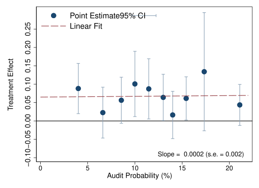
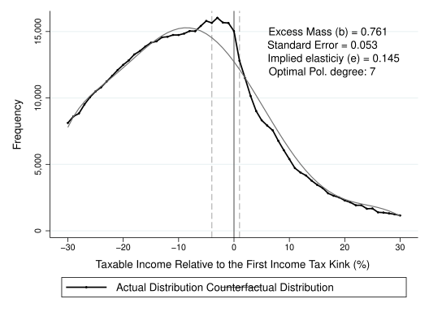

with Brad Nathan, Ricardo Perez-Truglia, and Alejandro Zentner — American Economic Journal: Applied Economics, 2025, 17(4): 223–259
Expand
This paper asks whether people’s willingness to pay taxes depends on what they think their taxes are used for. Using a real-world experiment, we show that correcting taxpayers’ mistaken beliefs about government spending changes their behavior, for example, whether they appeal a property tax assessment. The results suggest that people are more willing to pay taxes when they learn that those taxes fund public services that are more valuable to them.
Average Treatment Effects of Feedback on Share of Property Taxes that Go to Public Schools on Probability of Protesting Taxes.
with Marcelo Bérgolo, Rodrigo Ceni, Guillermo Cruces, and Ricardo Perez-Truglia — American Economic Journal: Economic Policy, 2023, 15(1): 110–153
Expand
This paper asks whether firms evade taxes by weighing the gains from evasion against the risk and cost of being caught. In collaboration with the Uruguayan tax authority, we conducted a real-world experiment involving 20,440 small- and medium-sized firms that together paid more than US$200 million in taxes each year. We find that providing firms with information about audits changed their tax compliance decisions, but not in the way predicted by the standard model of tax evasion.

Treatment effect of the probability of being audited on VAT payments.
with Marcelo Bérgolo, Gabriel Burdín, Santiago Burone, Mauricio De Rosa, and Martín Leites — Journal of Economic Behavior & Organization, 2022, 200: 782–802
Expand
This paper asks what shapes individuals’ inequality aversion. We surveyed more than 1,800 students in Uruguay and asked them to choose between societies with different levels of average income and inequality. We also varied the source of inequality, the income position participants were asked to consider, and opportunities for social mobility. Most were willing to sacrifice some income for greater equality, but less so when inequality resulted from effort rather than luck. Highlighting opportunities for social mobility had different effects depending on the income position considered: it reduced concern about inequality when mobility would move them up, but increased it when mobility would move them down.
Treatment Effects on Inequality Aversion by Position in the Income Distribution and for Different Treatment Arms.
with Marcelo Bérgolo, Gabriel Burdín, Mauricio De Rosa, and Martín Leites — The Economic Journal, 2021, 131(639): 2726–2762
Expand
This paper asks how individuals respond to personal income taxes in Uruguay. Using detailed tax records, we examine taxpayers close to the point where the tax rate increases. We find that the overall response is modest and does not come from earning less. Instead, some taxpayers claim more deductions and, in some cases, underreport income. The findings suggest that taxpayers’ responses depend strongly on the opportunities the tax system gives them to reduce their taxable income. In Uruguay, where most workers are wage earners and deductions are limited, these opportunities, and therefore the overall response, remain relatively small.

Taxable labour Income Bunching: Pure Wage Earners who Itemize Deductions.
with Marcelo Bérgolo, Rodrigo Ceni, Guillermo Cruces, and Ricardo Perez-Truglia — AEA Papers and Proceedings, 2018, 108: 83–87
Expand
This paper asks what firms know about tax audits. Using a survey of Uruguayan firms and tax records, we find that firms greatly overestimate how likely they are to be audited, although their beliefs about penalties are much closer to reality. These mistakes are common even among accountants and experienced firms, and seem to be shaped mainly by whether a firm was audited recently.
This site uses cookies from Google to deliver its services and to analyze traffic. Information about your use of this site is shared with Google. By clicking “Accept”, you agree to its use of cookies. Cookie Policy
![Figure showing the estimated effect of information about the school-tax share on the probability of filing a property-tax appeal, separately for households with and without children. The figure reports both unadjusted estimates and estimates controlling for baseline characteristics. The information treatment reduces appeal filing by about 4.8 percentage points among households with children and increases it by about 4.8 percentage points among households without children. The difference between the two groups is statistically significant, and the adjusted and unadjusted estimates are similar.](assets/img/raw_mean_comparison_school_feedback_owner_protest_2021.svg)